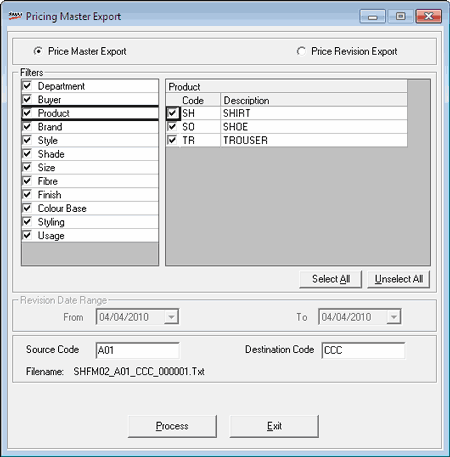

This option is used to export Price Masters and Price Revision records from one POS location to other locations. The file is saved as a text file.
How to reach: Housekeeping > Data Export Masters > Pricing Details
The Pricing Master Export window is displayed.

You can choose either Price Master Export or Price Revision Export from the window displayed.
Filters: The product attributes are listed. Click a product attribute to get the list of values. Select the required values from the list.
Select All: Click to select all values in the list.
Unselect All: Click to un-select all values in the list.
Revision Date Range: This option is activated when Price Revision Export is selected. Enter the From and To date.
Source Code: By default, the Shoper company code is displayed. You may change the code.
Destination Code: Enter the destination Shoper company code.
Filename: The output file name is displayed here which changes as per the option selected, Source code and Destination code. When the option is Price Master Export the filename starts with SHFM02 and for Price Revision Export, it starts with SHPR.